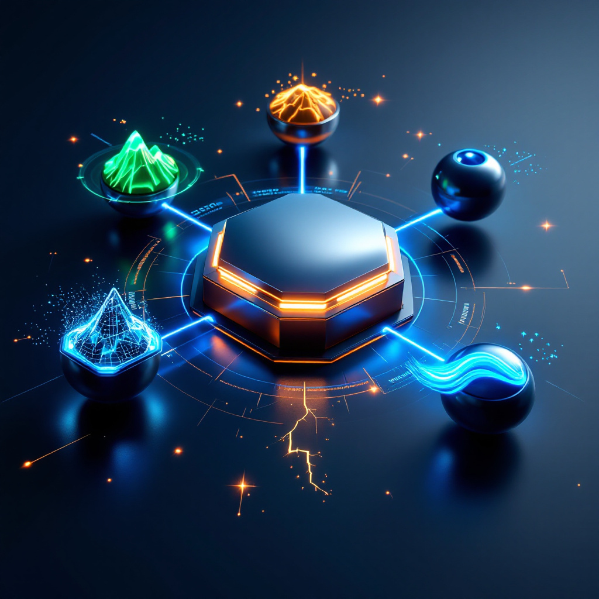

Apex Intelligence for Public Sector Protection
5 AI Systems Working as One Coordinated Pod
ORCA Federal delivers revolutionary cybersecurity through coordinated pod intelligence.
Our five AI systems—APEX, ECHO, PULSE, SURGE, and FLOW—work together to provide
complete protection for federal agencies, state governments, education, and healthcare.
Core Platform Enhanced by Pod Intelligence
Built on Proven Foundation Services
Real-time MonitoringLive security dashboard
Compliance ManagementFERPA, FISMA, HIPAA
Secure File SharingEnterprise encryption
User AdministrationRole-based access + MFA
Enhanced by POD Intelligence Solutions
"Our core platform handles the essentials. POD Intelligence elevates it to dominance."
Core services + 5 coordinated AI systems = Complete protection
Built for Public Service
150+
Organizations Protected
75%
Win Rate vs Competitors
FISMA CompliantFedRAMP ReadyFERPA CertifiedHIPAA Compliant
Tailored Solutions for Every Public Sector
Federal Government
Purpose-built for federal agencies with native FISMA compliance and rapid deployment capabilities.
- • DOD & Intelligence Community ready
- • FedRAMP authorization support
- • GSA Schedule available
Learn More →Education
Protecting student data with federal-grade security at academic pricing (40% discount).
- • FERPA & CIPA compliance
- • K-12 and higher education
- • Campus-wide protection
Learn More →Healthcare
Military-grade protection for patient data with comprehensive HIPAA compliance.
- • HIPAA & HITECH ready
- • Medical device security
- • VA hospital certified
Learn More →Why ORCA Dominates
Pod vs Solo: The Clear Advantage
Competitors (Solo AI)
- • Single AI for limited coverage
- • Reactive threat response
- • 2D traditional dashboards
- • 6-12 month deployments
- • Commercial adapted to federal
ORCA Federal (Pod Intelligence)
- • 5 coordinated AI systems
- • Predictive threat prevention
- • 5D holographic interface
- • Accelerated deployment
- • Built native for public sector
Ready to Join the Pod?
Experience the power of coordinated AI intelligence. Get your free security assessment and see how ORCA Federal can protect your organization.
Special Offer:Federal agencies get 90-day pilot program at 50% discount